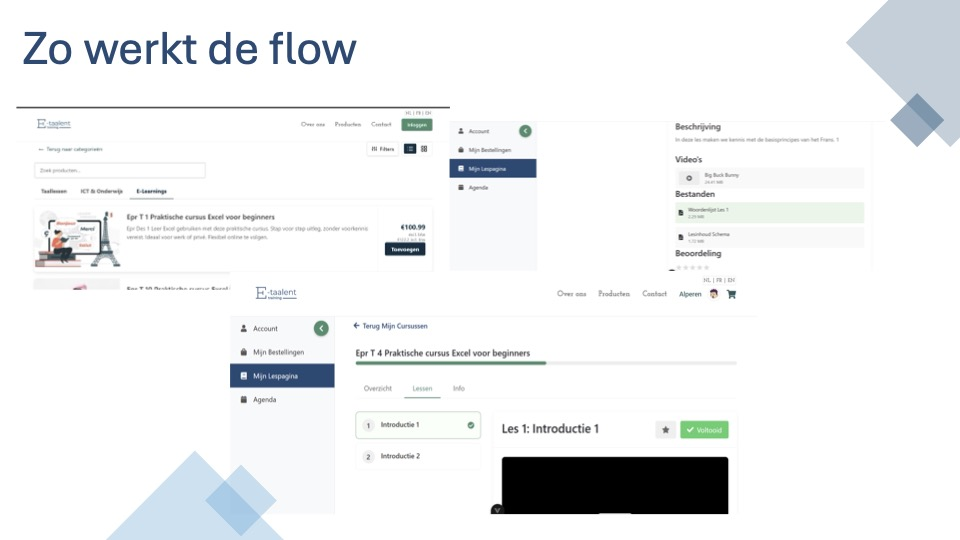
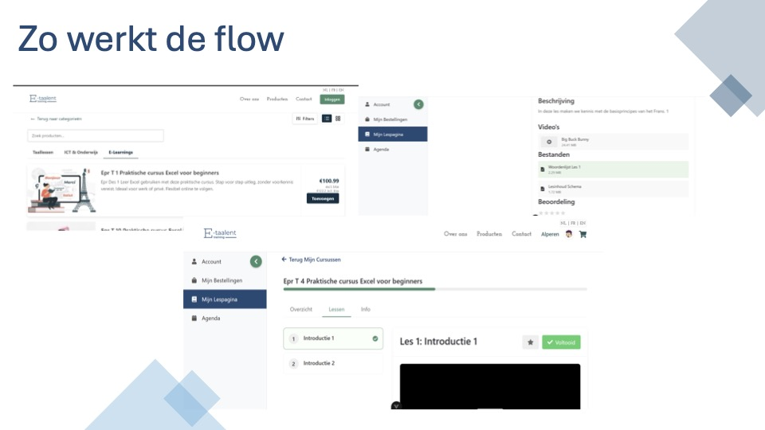

WPL 2
Voor het vak WPL2 kregen we de kans om te werken voor een echte klant: E-Taalent, een organisatie die taalcoaching en online cursussen aanbiedt aan bedrijven en particulieren. Hun bestaande website voldeed niet meer aan de huidige standaarden: ze was verouderd, rommelig en gaf geen professionele indruk. Ook het logo en de visuele identiteit sloten niet aan bij de missie en visie van E-Taalent. De klant gaf aan dat ze nood hadden aan een frisse, moderne uitstraling die vertrouwen en kwaliteit uitstraalt.
Met een gemotiveerd team van DVO- en PRO-studenten zijn we aan de slag gegaan om E-Taalent een volledige rebranding te geven. We begonnen met het analyseren van de bestaande website en branding, en werkten daarna aan wireframes, ontwerpen en de uitwerking van de nieuwe huisstijl. We ontwikkelden een modern logo en een volledig herwerkte website die duidelijk, professioneel en gebruiksvriendelijk is. Ook de structuur van de website werd herbekeken, zodat bezoekers sneller vinden wat ze zoeken.
De nieuwe website zet de diensten van E-Taalent helder in de kijker en benadrukt de kwaliteit van hun aanbod. Dankzij een rustige lay-out, overzichtelijke navigatie en consistente branding straalt het geheel nu vertrouwen uit – precies wat de klant voor ogen had.
Dit project bood ons de kans om praktijkervaring op te doen in een multidisciplinair team en te leren hoe je samenwerkt aan een realistische opdracht. We hebben onze vaardigheden in webdesign, branding en samenwerking versterkt. Het resultaat is een professionele website die perfect aansluit bij de waarden van E-Taalent en waar we met trots op kunnen terugkijken.
Mijn aandeel in dit project bestond uit het analyseren van de bestaande website van E-Taalent en het vergelijken ervan met andere websites in de markt. Dit stelde me in staat om de zwakke punten van de huidige website te identificeren en verbeterpunten te bepalen. Op basis van deze analyse ben ik begonnen met het ontwerpen van de nieuwe website. Samen met het DVO-gedeelte van het team werkte ik verschillende wireframes uit om de structuur van de site te bepalen en zorgde ik ervoor dat het design zowel gebruiksvriendelijk als visueel aantrekkelijk was.
Daarnaast heb ik een nieuw logo ontworpen en de huisstijl van E-Taalent vernieuwd, zodat de branding nu beter aansluit bij de professionele uitstraling die de klant wilde uitstralen. Het was belangrijk om een logo en visuele stijl te creëren die zowel vertrouwen als expertise uitstraalde, passend bij de diensten die E-Taalent aanbiedt.
In de laatste sprint heb ik de rol van scrummaster op mij genomen. Hierbij was mijn verantwoordelijkheid het coördineren van de teamleden, het bijhouden van de voortgang en het zorgen dat de deadlines werden gehaald. Ik heb geprobeerd een bijdrage te leveren door het team goed te begeleiden en ervoor te zorgen dat we als team efficiënt werkten en obstakels snel konden overwinnen.
Door deze verschillende rollen heb ik mijn vaardigheden in zowel design als projectmanagement verder kunnen ontwikkelen. Het was een waardevolle ervaring om zowel creatief bij te dragen aan het ontwerp als organisatorisch te zorgen voor een soepel verloop van het project.
Door dit project heb ik veel bijgeleerd, zowel op technisch als op persoonlijk vlak. Een van de belangrijkste inzichten was hoe je beter functioneert binnen een team. Samenwerken met studenten uit verschillende richtingen vroeg om goede communicatie, afstemming en flexibiliteit. Ik heb geleerd om mijn rol binnen het team op te nemen, maar ook om rekening te houden met de sterktes en werkstijlen van anderen.
Daarnaast heb ik kennisgemaakt met het toepassen van agile werken binnen een grafisch project. Dankzij het werken in sprints en het gebruiken van tools zoals scrumborden en takenlijsten, leerde ik hoe je gestructureerd en stapsgewijs naar een eindresultaat toe werkt. Ook het organiseren van professionele meetings en stand-ups was nieuw voor mij. Het gaf me inzicht in hoe belangrijk het is om regelmatig af te stemmen en transparant te zijn over de voortgang.
Een ander leermoment was het documenteren van een project, iets dat in de grafische wereld vaak erg belangrijk is. Ik kreeg zicht op hoe briefing, feedback, en oplevering goed worden vastgelegd en hoe dit een project duidelijker en professioneler maakt.
Tot slot heb ik ook ervaring opgedaan in het communiceren met een klant. Leren luisteren naar hun wensen, die vertalen naar concrete oplossingen en hen mee betrekken in het proces, was een waardevol onderdeel van deze opdracht.
Kortom, dit project gaf me een realistische inkijk in hoe een grafisch project tot stand komt en hoe belangrijk samenwerking, structuur en communicatie zijn in een professioneel werkveld.
Tijdens WPL2 heb ik gewerkt aan een project dat me een duidelijk beeld gaf van wat een grafisch vormgever doet in het werkveld en hoe belangrijk samenwerking is binnen een multidisciplinair team. Ik vond het project over het algemeen zeer interessant, vooral omdat je de kans krijgt om theorie om te zetten in praktijk. Wat ik soms moeilijk vond, was het samenwerken met mensen met een andere visie of stijl. Iedereen bracht zijn eigen ideeën en manier van werken mee, wat zorgde voor boeiende discussies, maar ook voor uitdagingen bij het bepalen van een uniforme stijl. Daarnaast had ik soms het gevoel dat bepaalde lessen of presentaties beter benut hadden kunnen worden als werkmomenten, vooral in periodes waarin we veel werk hadden voor het project. Toch zijn we erin geslaagd om alles tijdig af te werken.
Op technisch vlak heb ik vooral geleerd hoe je beter functioneert binnen een team en hoe belangrijk communicatie is. Door samen te werken met studenten uit andere opleidingen heb ik ervaren hoe waardevol het is om duidelijk af te stemmen en flexibel te blijven. Ik heb geleerd om mijn rol binnen het team op te nemen, maar ook om in te spelen op de sterktes van anderen. Dit heeft me niet alleen geholpen om mijn eigen werk te verbeteren, maar ook om het team sterker te maken.
Wat ik over mezelf als toekomstige werknemer heb geleerd, is dat ik goed moet kunnen schakelen tussen zelfstandig werken en samenwerken. Deadlines respecteren is cruciaal, en ik heb gemerkt dat het een groot voordeel is als je taken al iets vroeger afrondt, zodat er nog ruimte is voor aanpassingen.
Wat betreft de Thalento-test vond ik dat de resultaten deels klopten. Het gaf wel inzicht in bepaalde persoonlijkheidskenmerken, maar ik vond het niet helemaal sluitend. In ons team waren niet alle profielen vertegenwoordigd, wat me deed twijfelen aan de effectiviteit van die verdeling. Een van de uitdagingen aan het begin van het project was dat niemand elkaar goed kende en dat er wat onzekerheid was over leiderschap. Gelukkig kwam dit na verloop van tijd vanzelf in orde.
De SDG’s zijn volgens mij goed bedoeld, maar ik ben er niet volledig van overtuigd dat ze een echte meerwaarde hadden binnen ons project. Ze bleven vrij abstract en kwamen niet altijd natuurlijk terug in ons werk.
Tot slot zie ik duidelijke linken met de X-factor. We leerden empathie tonen voor teamleden, werkten samen over disciplines heen en hadden direct contact met de klant, wat ons een ondernemende houding leerde aannemen. Het samenwerken met programmeurs en het leren begrijpen van elkaars expertise zorgde ervoor dat we elkaar konden versterken en zo samen een sterk eindproduct konden neerzetten.
Pitch


 

Brand Guidelines